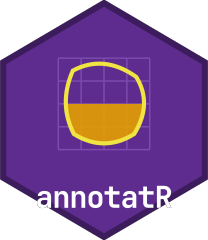

A handle, not a pixel array
Whole-slide microscopy and hyperspectral cubes are routinely
gigabytes in size, so annotatR never loads them wholesale. Reading an
image returns an annot_image: a lightweight,
backend-agnostic handle that carries the metadata you need to
annotate — dimensions, pyramid levels, bands, pixel size — together with
a lazy accessor that fetches pixels only when asked.
img <- at_example_image("tissue")
img
#> <annot_image> example_tissue.png
#> backend: "raster" | dtype: "uint8"
#> size: 512 x 512 px | levels: 1 | bands: 3
#> pixel size: 1 x 1 px
dim(img)
#> [1] 512 512 3The dim() of a handle is
c(width, height, bands). Printing it summarises the backend
that opened it, the data type, and the extent, but nothing above has
touched the pixels themselves. That is the point: you can inspect,
transform and plan annotations against a huge image on a modest machine,
because the handle is a few hundred bytes regardless of how large the
underlying file is.
A handle also exposes accessors for everything an annotation workflow
needs: at_n_bands() and at_bands() for the
channels, at_pixel_size() for physical scale, and
at_meta() for backend-specific keys such as the source path
and data type. Each simply reads a field of the handle — no I/O is
involved.
Pyramid levels
Slide and multiplex formats store the same scene at several
resolutions — a pyramid. Level 0 is full resolution; each
higher level is a coarser overview. The multiplex example is a
three-level pyramidal TIFF.
mx <- at_example_image("multiplex")
at_n_levels(mx)
#> [1] 3
at_is_pyramidal(mx)
#> [1] TRUE
levels <- 0:(at_n_levels(mx) - 1L)
data.frame(
level = levels,
width = vapply(levels, function(l) at_dims(mx, l)[1], integer(1)),
height = vapply(levels, function(l) at_dims(mx, l)[2], integer(1))
)
#> level width height
#> 1 0 512 512
#> 2 1 256 256
#> 3 2 128 128Levels matter for two reasons. First, an overview lets you display
and navigate the whole image without reading full resolution. Second, an
ROI drawn on a coarse level records the level it was
created at, so its coordinates can be rescaled exactly to level 0 (see
at_roi_rescale() and at_transform()). Every
geometry in annotatR is anchored to a pyramid level; the coordinate
convention is image pixels with the origin at the top-left and
y increasing downward.
Backends
A backend is the reader for a particular family of formats. The registry maps format names to four functions — read metadata, fetch a tile, detect a file, and report whether its optional dependencies are installed — so new formats can be added without touching core code.
at_backend_list()
#> # A tibble: 6 × 4
#> name description extensions available
#> <chr> <chr> <chr> <lgl>
#> 1 cuvis Cubert hyperspectral (cuvis.r) cu3, cu3s FALSE
#> 2 envi ENVI header + binary cube hdr, dat, img, … TRUE
#> 3 ometiff OME-TIFF and qptiff (RBioFormats) ome.tif, ome.ti… TRUE
#> 4 raster PNG, JPEG, and single-plane TIFF png, jpg, jpeg,… TRUE
#> 5 tiff Pyramidal / multi-directory TIFF tif, tiff TRUE
#> 6 tivita Diaspective Vision Tivita (ENVI-compatible) dat, hdr TRUEThe available column is evaluated lazily: a backend for
a format whose support package is absent still appears in the list but
reads nothing until you install the package. This keeps the package
usable with a minimal set of dependencies, and means a missing optional
package never breaks loading — only reading that particular format. When
you call at_read_image() without naming a backend, the
registry tries the available backends in priority order and picks the
first that recognises the file; more specific readers are tried before
general ones, so an OME-TIFF is not claimed by the plain raster reader.
You can always bypass detection by passing backend =
explicitly.
The universal tile accessor
Whatever the backend, pixels come out through one function,
at_tile(), and always as a three-dimensional
[y, x, band] numeric array — even for a single band. You
choose the pyramid level, an optional pixel window, and an optional
subset of bands.
Because the request is scoped, only that 64x64x4 block is read. To display a cheap thumbnail of the whole image, read the coarsest level in full:
overview <- at_tile(mx, level = 2)
dim(overview)
#> [1] 128 128 4
dim(at_tile(mx, level = 2, bands = 1))
#> [1] 128 128 1Spectral cubes are handled by the very same accessor; their band metadata simply carries wavelengths, which you can read back with the image accessors.
cu <- at_example_image("cube")
at_is_spectral(cu)
#> [1] TRUE
head(at_bands(cu), 3)
#> # A tibble: 3 × 4
#> index name wavelength unit
#> <int> <chr> <dbl> <chr>
#> 1 1 Band 1 450 Nanometers
#> 2 2 Band 2 462. Nanometers
#> 3 3 Band 3 473. Nanometers
range(at_wavelengths(cu))
#> [1] 450 900Registering a custom backend
Adding support for a new format means supplying the four functions
and calling at_backend_register(). The read_fn
returns an annot_image — a classed list of metadata plus a
handle for the accessor — and the tile_fn
turns a request into a [y, x, band] array. Here is a
complete, self-contained backend for a toy “constant image” format that
stores only a size and a fill value, and synthesises pixels on
demand.
const_read <- function(path, ...) {
spec <- readRDS(path) # list(width, height, bands, value)
structure(
list(
source = path,
backend = "const",
dims = c(spec$width, spec$height),
n_levels = 1L,
level_dims = list(c(spec$width, spec$height)),
n_bands = spec$bands,
band_names = paste0("Band ", seq_len(spec$bands)),
pixel_size = c(1, 1),
pixel_unit = "px",
dtype = "double",
handle = list(value = spec$value), # no pixels, just the fill value
meta = list()
),
class = "annot_image"
)
}
const_tile <- function(img, level, xrange, yrange, bands) {
nx <- xrange[2] - xrange[1] + 1L
ny <- yrange[2] - yrange[1] + 1L
nb <- if (is.null(bands)) img$n_bands else length(bands)
array(img$handle$value, dim = c(ny, nx, nb))
}
at_backend_register(
name = "const",
read_fn = const_read,
tile_fn = const_tile,
detect_fn = function(path) grepl("\\.const$", path, ignore.case = TRUE),
available_fn = function() TRUE,
description = "Constant-value demo backend",
extensions = "const"
)The new backend now behaves like any other — it appears in the
registry, is auto-detected from the file, and serves tiles through
at_tile().
path <- tempfile(fileext = ".const")
saveRDS(list(width = 64L, height = 48L, bands = 2L, value = 0.5), path)
cimg <- at_read_image(path)
cimg
#> <annot_image> file2cde573f845b.const
#> backend: "const" | dtype: "double"
#> size: 64 x 48 px | levels: 1 | bands: 2
#> pixel size: 1 x 1 px
dim(at_tile(cimg, xrange = c(1, 8), yrange = c(1, 8)))
#> [1] 8 8 2Memory discipline
The lazy handle is not a convenience but a contract. Everything
downstream reads tile-wise: at_extract() walks each ROI’s
bounding box level by level, and at_mask() rasterises
within the region’s extent rather than the whole slide. By requesting
only the window and bands you need — as at_tile() above
does — you can annotate and extract from images far larger than memory.
A well-behaved backend honours the same discipline: its
tile_fn should fetch just the requested window, never the
entire level, so that the cost of a call scales with the tile rather
than the image. The const backend above is the extreme case
— it holds no pixels at all and synthesises each tile from a single
value.
Next, see the The annotation model vignette to learn how ROIs, layers and projects build on these image handles.
Use of LLM tools
Portions of this package were prepared with assistance from large language model tooling for narrowly defined, non-authorial tasks: copyediting, prose smoothing, Markdown/LaTeX formatting, scaffolding of boilerplate files (CI configs, build scripts), code refactoring. The tools used were Chat AI, the LLM service of KISSKI (GWDG), and a self-hosted Mistral Small (24B, Apache-2.0) run locally via Ollama and the ollamar R package — local inference only, with no data sent to third parties for the self-hosted model.